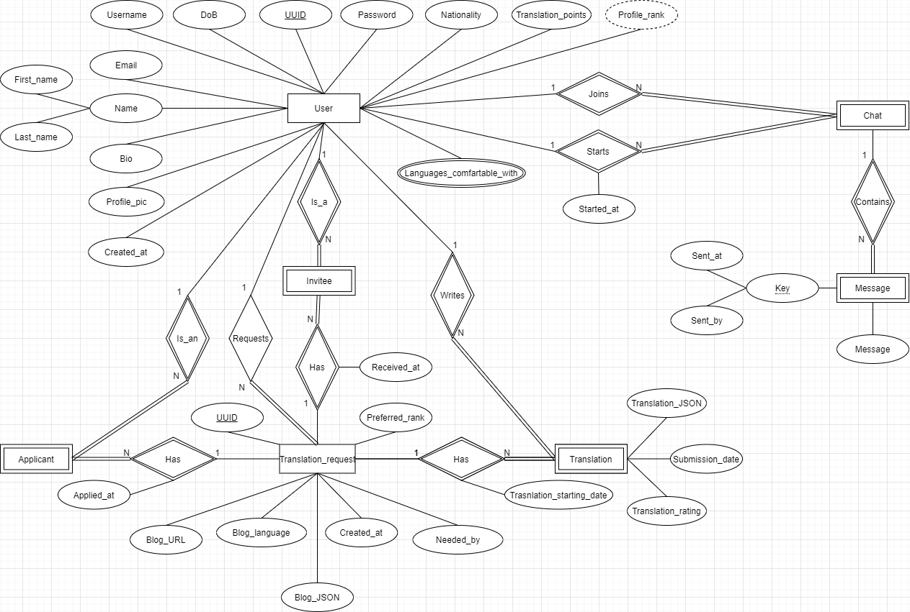
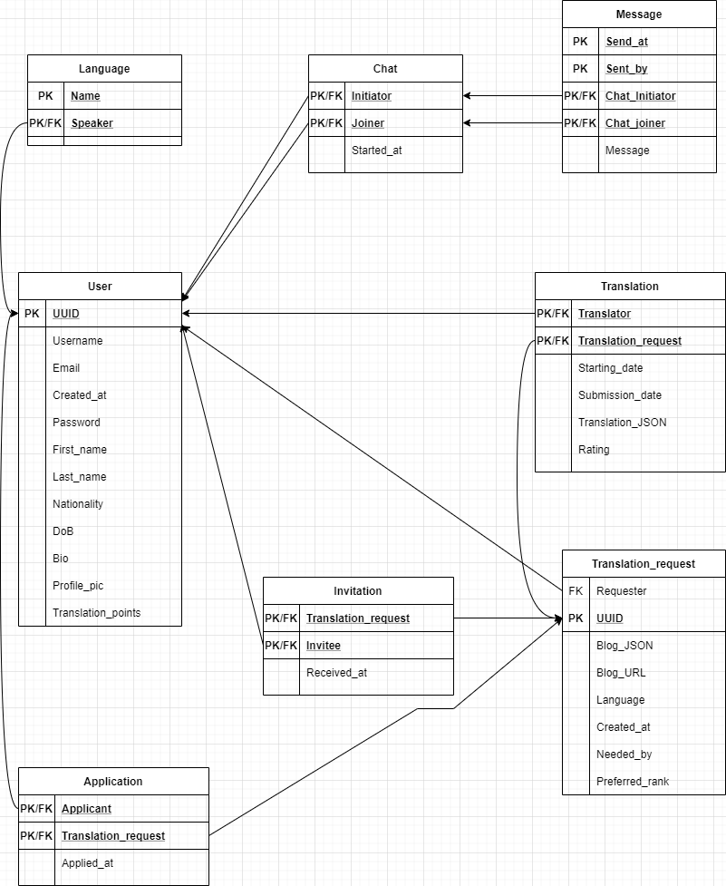

## About me
- Obada Khalili
- 3rd year AI student at NNU in the CAP department
- Software Engineer at Foothill Solutions
## About the talk
- We will be talking about a project of mine named ERML
- ERML is an organization that namespaces an array of tools targeted towards the SQL community
Quick refresher on ERD and RM


- It tries to fulfill a vision where you can visualize your database's ERD and RM, and generate SQL schema
code, all from a single source
- To meet this vision, it requires three primary components, and I will be covering them in this talk
## ERML - The Language
ERML (Entity-Relationship Markup Language) is a language standard defined by me that aims to provide a
complete solution to represent any ERD requirement, and to do that intuitively
[@erml/parser](https://codesandbox.io/s/erml-talk-vp92e?file=/src/index.js) is an open-source parser
implementation of ERML standards
### ERML - The DBML Compiler
- DBML (Database Markup Language) is another language standard, set by Holistics, and it's designed to define
and document database schemas and structures (relational models)
- DBML has an online RM visualization tool; [dbdiagram](https://dbdiagram.io/d/619c7ced02cf5d186b6369c9)
- DBML can be converted into SQL
- ERML can hook into the DBML organization by providing a compiler to DBML, which achieves the second and
third parts of ERML's vision: RM Visualizer and SQL schema code generator
- An ERML-to-DBML compiler doesn't exist (yet), which moves us to the next part
#### Growing the Palestinian's Open-source Culture
- The computer science community of the Palestinian youth targets all of its efforts and talent into solving
competitive programming problems. This is a good skill to have, but it's important to know when to stop, and
start channeling this effort into more practical areas of computer science, like open-source
- Browse open-source projects that meet your requirements, choose one, and start solving its problems